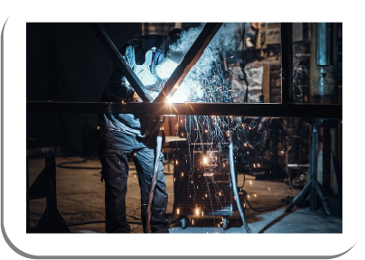
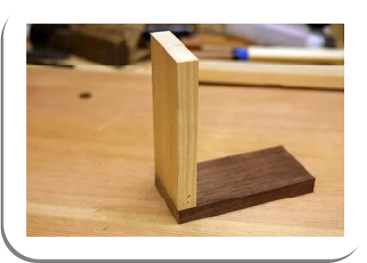
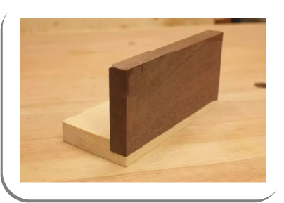

No mundo do design de produtos, a criatividade é vital, mas a criatividade sozinha não é suficiente para garantir que um projeto seja bem-sucedido. É aqui que entram as noções estruturais. Elas representam o alicerce sobre o qual se constrói a forma e a função de um produto. Para um estudante de design ou engenharia, compreender e aplicar essas noções é fundamental para o sucesso futuro na área.
Para criar produtos bem-sucedidos, é crucial dominar as noções estruturais básicas. Aqui, serão exploradas três dessas noções essenciais: sambladuras, fixação química e fixação mecânica. Esses conceitos são os pilares que sustentam a integridade e a durabilidade de seus projetos.
As sambladuras, ou técnicas de junção, referem-se à maneira como diferentes partes de um produto são conectadas umas às outras. Isso inclui métodos como soldagem, costura, colagem e encaixe. Ao entender as opções disponíveis, você pode escolher a técnica adequada para garantir que as partes de seu projeto se mantenham firmemente unidas.
Uma sambladura bem-executada não apenas fornece estabilidade estrutural, mas também pode influenciar a estética do produto. Escolher a técnica certa pode ser a diferença entre um design que se destaca e um que desmorona.
A soldagem é um exemplo de tipo de sambladura muito utilizado em projetos de produtos. A soldagem utiliza calor para fundir metais, criando uma conexão permanente e forte. Existem diferentes técnicas de soldagem, como soldagem por arco, soldagem MIG (metal inert gas) e soldagem TIG (tungsten inert gas), que podem ser usadas para unir metais.
A soldagem por arco é um processo de união de metais que envolve o uso de um arco elétrico para fundir os materiais de base e criar uma junta sólida quando esfriam. É um dos métodos de soldagem mais comuns e amplamente utilizados na fabricação e na construção.
A soldagem por arco é usada em uma variedade de aplicações, desde a fabricação de estruturas metálicas até a construção de veículos e até mesmo em pequenas soldagens de reparo. É uma técnica versátil e amplamente utilizada que requer habilidade e prática para ser executada com precisão.
Já a soldagem MIG é um processo de soldagem por arco elétrico que utiliza um arame contínuo como eletrodo consumível. A soldagem MIG é amplamente utilizada em uma variedade de aplicações, em razão de sua versatilidade, eficiência e capacidade de soldar uma ampla gama de metais e espessuras. É comum em setores como fabricação de estruturas metálicas, indústria automotiva, construção naval, entre outros. A técnica é apreciada por sua capacidade de produzir soldas limpas e de alta qualidade.

Soldagem por arco
Fonte: Freepik (c2010-2023)
Costuras em projetos de móveis referem-se às junções ou conexões em que duas ou mais peças de madeira, metal, plástico ou outro material são unidas de forma a criar uma estrutura ou um componente de móvel. Essas costuras desempenham um papel crucial na estabilidade, durabilidade e estética do móvel e podem variar em complexidade, dependendo do design e do tipo de móvel em questão.
Existem vários tipos de costuras (juntas ou encaixes) utilizadas para unir peças de madeira e criar estruturas sólidas e funcionais. A escolha do tipo de costura depende do projeto, das necessidades específicas e do estilo desejado.
As sambladuras, ou técnicas de junção, referem-se à maneira como diferentes partes de um produto são conectadas umas às outras. Isso inclui métodos como soldagem, costura, colagem e encaixe. Ao entender as opções disponíveis, você pode escolher a técnica adequada para garantir que as partes de seu projeto se mantenham firmemente unidas.
Uma sambladura bem-executada não apenas fornece estabilidade estrutural, mas também pode influenciar a estética do produto. Escolher a técnica certa pode ser a diferença entre um design que se destaca e um que desmorona.
A soldagem é um exemplo de tipo de sambladura muito utilizado em projetos de produtos. A soldagem utiliza calor para fundir metais, criando uma conexão permanente e forte. Existem diferentes técnicas de soldagem, como soldagem por arco, soldagem MIG (metal inert gas) e soldagem TIG (tungsten inert gas), que podem ser usadas para unir metais.
A soldagem por arco é um processo de união de metais que envolve o uso de um arco elétrico para fundir os materiais de base e criar uma junta sólida quando esfriam. É um dos métodos de soldagem mais comuns e amplamente utilizados na fabricação e na construção.
A soldagem por arco é usada em uma variedade de aplicações, desde a fabricação de estruturas metálicas até a construção de veículos e até mesmo em pequenas soldagens de reparo. É uma técnica versátil e amplamente utilizada que requer habilidade e prática para ser executada com precisão.
Já a soldagem MIG é um processo de soldagem por arco elétrico que utiliza um arame contínuo como eletrodo consumível. A soldagem MIG é amplamente utilizada em uma variedade de aplicações, em razão de sua versatilidade, eficiência e capacidade de soldar uma ampla gama de metais e espessuras. É comum em setores como fabricação de estruturas metálicas, indústria automotiva, construção naval, entre outros. A técnica é apreciada por sua capacidade de produzir soldas limpas e de alta qualidade.
Soldagem por arco
Fonte: Freepik (c2010-2023)
Na imagem, uma pessoa aparece soldando objetos metálicos. A pessoa está de máscara de soldagem e está com máquina e materiais apropriados para soldagem.
Costuras em projetos de móveis referem-se às junções ou conexões em que duas ou mais peças de madeira, metal, plástico ou outro material são unidas de forma a criar uma estrutura ou um componente de móvel. Essas costuras desempenham um papel crucial na estabilidade, durabilidade e estética do móvel e podem variar em complexidade, dependendo do design e do tipo de móvel em questão.
Existem vários tipos de costuras (juntas ou encaixes) utilizadas para unir peças de madeira e criar estruturas sólidas e funcionais. A escolha do tipo de costura depende do projeto, das necessidades específicas e do estilo desejado.
Esta é uma das costuras mais reconhecíveis em móveis. Ela é caracterizada por suas “caudas” que se encaixam perfeitamente. As costuras de encaixe são conhecidas por sua resistência e estética e são frequentemente usadas em gavetas e caixas de madeira.
Junta de cauda de andorinha
Fonte: Wood Plans Easy to Follow (2018)
Nesta junta ou costura, duas placas são unidas de ponta a ponta, sem sobreposição. É muito utilizada para aumentar a largura de um painel, por exemplo, já que os painéis de madeira têm largura ou comprimento máximos. Com o uso de adesivos, junta de biscoito ou buchas (cavilhas), essa junta pode ser tão forte quanto a madeira em si.
Junta de topo com apoio de cavilhas
Fonte: Movelaria Tomazin (c2022)
A costura de espiga é uma das juntas mais versátil, forte e básica em marcenaria. Ela envolve a inserção de uma “espiga” em um “tenão” (ou mortise), criando uma conexão sólida. Essa costura é amplamente usada em estruturas de móveis, como cadeiras, pernas de mesas e armários. Com a penetração profunda da espiga no encaixe, as peças de madeira ficam apoiadas de forma segura, bem reforçadas pelo encaixe. É possível, ainda, reforçar a estrutura utilizando pregos.
Costura de espiga
Fonte: Anderson (2015)
Algumas placas de madeira são apresentadas. Em uma delas há uma reentrância e, sobre ela, há outra com uma saliência. Este é o tipo de encaixe em espiga.
Outro tipo de costura utilizada é a junção que utiliza pequenos discos de madeira ou metal chamados “biscoitos” para alinhar e unir as peças de madeira. É uma técnica eficaz para criar juntas planas e alinhadas, sendo comumente usada em tampos de mesas e painéis de móveis.
Costura em biscoito
Fonte: Kaltimber (2023)
Esta é uma técnica bastante comum na marcenaria. Ao contrário do que muita gente pensa, esse tipo de junta fornece uma estrutura forte e estável para o mobiliário. Consiste em pinos de alinhamento que auxiliam as peças de madeira a permanecerem juntas e que impedem o deslocamento ocasionado pelo uso. Além disso, essa técnica acelera o processo de montagem do mobiliário e ajuda a reduzir o desperdício de materiais, evitando excesso de cortes de peças.
Junta por cavilha
Fonte: Movelaria Tomazin (c2022)
Nesta junção, as tábuas são unidas por meio da remoção de parte da espessura de uma peça, encaixando a outra perfeitamente. Esse maior contato entre as peças de madeira proporciona um reforço na estrutura. Perceba a diferença nas imagens. Na primeira, você observará o encaixe direto de duas peças de madeira. Na segunda, você perceberá que foi feita uma ranhura na peça mais clara, encaixando a peça mais escura, proporcionando uma maior superfície de contato entre as peças, o que reforça a estrutura do encaixe.
 
Junção de canto simples e de ranhura
Fonte: adaptado de Coelho (c2016-2023)
Duas imagens. Na imagem da esquerda, duas peças em madeira, uma mais clara e outra mais escura, unidas formando um ângulo de 90 graus entre si, estando uma sobre a outra. Na imagem da direita, duas peças em madeira; a mais clara recebeu uma ranhura na ponta, para que fosse permitido o encaixe da madeira mais escura.
É uma das juntas mais fáceis de produzir na marcenaria. Uma prancha recebe um corte no meio para encaixar outra prancha. Com essa junta, é possível encaixar prateleiras ou criar divisórias verticais no mobiliário.
Junta de dado
Fonte: Coelho (c2016-2023)
Nesta opção de estrutura, você remove metade da espessura de cada placa, bem na intersecção da montagem, e encaixa uma placa na outra, conforme mostra imagem.
Junta de sobreposição
Fonte: Coelho (c2016-2023)
Esse encaixe une peças mais estreitas, criando um plano mais longo de chapa. O processo é simples. Em uma das peças é feito um entalhe, bem no meio da espessura, formando uma lingueta para fora. Na outra peça, é feita uma ranhura na mesma espessura da lingueta, formando um encaixe entre as peças, tipo macho e fêmea. O corte das peças deve ser preciso, para permitir um bom encaixe.
Junta de lingueta e ranhura
Fonte: Coelho (c2016-2023)
Esse encaixe é de canto entre duas peças e é proporcionado por meio de cortes retos tipo zigue-zague. É muito utilizado para caixas e nichos.
Encaixe em malhete
Fonte: Coelho (c2016-2023)
A fixação química envolve o uso de adesivos e substâncias químicas para unir peças de um produto. A escolha do adesivo correto e a preparação adequada das superfícies são essenciais para criar uma ligação sólida e confiável. Essa técnica é particularmente útil quando a aparência ou a estrutura das superfícies não permite a utilização de outras formas de fixação.
A fixação química permite unir materiais diferentes e é frequentemente usada em produtos que requerem uma estética limpa e sem costuras visíveis. Isso é importante para garantir a estabilidade, durabilidade e segurança do móvel. Existem vários tipos de fixação química usados em projetos de móveis.
Os adesivos são substâncias químicas usadas para unir peças de madeira, plástico, metal ou outros materiais. Existem vários tipos de adesivos disponíveis, incluindo adesivos à base de resina, adesivos epóxi, adesivos de poliuretano e adesivos à base de cianoacrilato (supercola). A escolha do adesivo depende do tipo de materiais a serem unidos e das condições de uso do móvel.
As colas para madeira são especialmente formuladas para unir peças de madeira. Elas vêm em diferentes tipos, como colas à base de resina (cola branca), colas de poliuretano e colas epóxi. A escolha depende do tipo de madeira e das necessidades específicas do projeto. As colas para madeira podem ser brancas, também conhecidas como PVA (acetato de polivinila), de poliuretano e epóxi. As vantagens desse tipo de cola são a ligação firme, a flexibilidade de uso, a secagem transparente e a facilidade de limpeza.
Colas para madeira
Fonte: Freepik (c2010-2023)
Os adesivos de cianoacrilato são conhecidos como “supercola”. Eles são rápidos e eficazes na união de materiais como plástico, metal e madeira, embora possam não ser a melhor opção para todos os projetos de móveis. Ainda que os adesivos de cianoacrilato sejam eficazes, é importante usá-los com cautela, pois eles podem colar a pele instantaneamente, e a inalação dos vapores pode ser prejudicial. Portanto, é essencial seguir as instruções do fabricante e tomar precauções de segurança ao manusear esses produtos.
A secagem dos adesivos de cianoacrilato é transparente, o que é uma vantagem em muitas aplicações. No entanto, em algumas situações, a transparência pode ser indesejável e os resíduos de cola podem ser difíceis de remover das superfícies.
Manter os adesivos de cianoacrilato em um local fresco e seco, com a tampa bem fechada, é fundamental para prolongar a vida útil deles, uma vez que a umidade pode causar solidificação prematura.
Adesivos de contato são usados para unir duas superfícies que são coladas uma à outra e depois pressionadas firmemente. São frequentemente usados para aplicação em laminados, fórmica e outros materiais.
Os adesivos de contato funcionam de maneira única, pois ambos os lados a serem colados são revestidos com o adesivo. Quando as superfícies revestidas com adesivo são pressionadas uma contra a outra, a ligação é estabelecida. Essa técnica de “contato” resulta em uma união firme e uniforme. Os adesivos de contato são versáteis e podem ser usados em uma ampla variedade de aplicações em móveis. Eles são especialmente úteis para aplicar laminados, fórmica, couro, vinil, carpetes, espumas, borrachas e outros materiais semelhantes. Além disso, são eficazes na fixação de bordas de móveis e na união de superfícies planas.
Adesivos de contato
Fonte: Freepik (c2010-2023)
Os adesivos em spray são produtos químicos de colagem que oferecem uma abordagem conveniente e eficaz para unir materiais em projetos de móveis. Esses adesivos são aplicados em forma de névoa e secam rapidamente, proporcionando uma fixação firme e uniforme. Uma vez aplicado, o adesivo é deixado secar por um curto período de tempo, geralmente de um a dez minutos, dependendo do produto e das condições ambientais. Após a secagem, as superfícies podem ser pressionadas juntas para formar uma ligação forte.
Os adesivos em spray são versáteis e podem ser usados em uma variedade de aplicações em móveis. Eles são eficazes na colagem de materiais como madeira, papel, tecido, espuma, plástico, metal e outros. São frequentemente usados em estofamento, revestimento de móveis, aplicação de laminados, fixação de painéis decorativos e muito mais.
Deve-se, porém, tomar cuidado ao usar adesivos em spray em ambientes fechados, pois os vapores podem ser prejudiciais à saúde. É aconselhável usar esses produtos em áreas bem ventiladas e seguir as diretrizes de segurança do fabricante.
Adesivo em spray
Fonte: Microsoft Bing (2023b)
Na imagem, uma mão masculina pressiona embalagem contendo spray em uma superfície.
Adesivos epóxi são extremamente fortes e duráveis. Eles são frequentemente usados para unir metais e cerâmicas em projetos de móveis.
Os adesivos epóxi são compostos de duas partes distintas: uma resina e um endurecedor. Para ativá-los, é necessário misturar essas duas partes em proporções adequadas, conforme as instruções do fabricante. A mistura inicia uma reação química que endurece o adesivo, criando uma ligação sólida.
Uma das principais vantagens dos adesivos epóxi é a sua incrível resistência mecânica e química. Eles são capazes de suportar cargas significativas e resistir a condições adversas, como umidade, calor e produtos químicos. São conhecidos também por sua durabilidade a longo prazo. Eles mantêm sua força ao longo dos anos, o que os torna ideais para móveis que devem resistir ao desgaste e à passagem do tempo.
Epóxi
Fonte: Microsoft Bing (2023a)
Na imagem, uma mão passa resina epóxi em uma superfície com um pincel.
Os adesivos de poliuretano são substâncias químicas amplamente utilizadas na indústria de móveis em razão de suas características de adesão excepcionais. Eles oferecem uma combinação única de durabilidade, flexibilidade e resistência à água, tornando-os ideais para várias aplicações na fabricação de móveis.
Uma das maiores vantagens dos adesivos de poliuretano é a sua excepcional durabilidade. Eles são conhecidos por criar ligações altamente resistentes que podem suportar cargas significativas e resistir ao desgaste ao longo do tempo. Esses adesivos são versáteis e podem ser usados em uma variedade de aplicações em móveis. Eles são úteis na união de madeira, plástico, metal e outros materiais. São comumente usados em montagens de móveis, encaixes, laminados e até mesmo na fixação de peças decorativas.
Os adesivos de fusão a quente, também conhecidos como adesivos hot melt, são substâncias químicas utilizadas na fabricação de móveis em razão de sua capacidade de fornecer uniões rápidas e versáteis. Eles são conhecidos por sua aplicação em estado líquido, seguida de solidificação quando resfriam, criando uma ligação sólida.
Uma das características distintivas dos adesivos de fusão a quente é que eles são aplicados em estado líquido por meio de uma pistola de cola quente. Quando aquecidos, esses adesivos se tornam fluidos e podem ser aplicados nas superfícies que serão coladas. Os adesivos hot melt solidificam rapidamente à medida que esfriam, o que torna esse método de colagem eficiente em termos de tempo. Os montadores podem prosseguir com a montagem quase imediatamente após a aplicação.
Esses adesivos são versáteis e podem ser usados em uma variedade de aplicações na fabricação de móveis. Eles são frequentemente usados para colar madeira, papelão, tecido, plástico, espuma e outros materiais, tornando-os ideais para montagem de móveis e estofamento. Ao contrário de alguns outros adesivos, que podem ser desfeitos, os adesivos hot melt são geralmente permanentes. Uma vez colados, é difícil separar as peças sem causar danos.
Colagem de fita de borda
Fonte: Jowat Adesivos ([s. d.])
A fixação mecânica refere-se ao uso de elementos como parafusos, rebites e porcas para prender peças juntas. É uma técnica robusta e confiável que oferece força e durabilidade. A fixação mecânica é frequentemente usada em produtos sujeitos a estresse, como móveis, estruturas e equipamentos. Dominar essa técnica é fundamental para garantir a segurança e a longevidade de seus projetos.
Os parafusos proporcionam estabilidade e resistência às junções de móveis. Eles ajudam a manter as peças unidas de forma segura, prevenindo a separação acidental, e permitem que os móveis sejam desmontados e montados facilmente. Isso é útil para transportar, armazenar e facilitar a substituição de peças danificadas.
Os parafusos oferecem flexibilidade no design de móveis, permitindo que diferentes peças sejam unidas de várias maneiras. Isso é particularmente importante em móveis modulares, em que os componentes podem ser combinados de maneiras diferentes.
Os parafusos desempenham um papel fundamental na construção de móveis, fornecendo estabilidade, resistência e flexibilidade no design. Eles são uma escolha versátil e confiável para unir peças de móveis, garantindo que estes sejam duráveis, funcionais e seguros.
Fixação de parafusos
Fonte: Freepik (c2010-2023)
Na imagem, mãos femininas fixam parafuso em cadeira usando chave de fenda.
Os rebites são usados para criar ligações robustas e duráveis entre peças de móveis. Eles são particularmente eficazes em áreas onde a força e a estabilidade são essenciais. Em móveis sujeitos a movimentos frequentes, como cadeiras ou móveis articulados, os rebites podem resistir bem a tensões e vibrações, garantindo que as junções permaneçam seguras.
Em móveis que incluem estruturas metálicas, como armários ou estantes de metal, os rebites são frequentemente usados para montar as partes metálicas, proporcionando uma ligação confiável. Os rebites podem ser usados para criar ligações visivelmente limpas e discretas, contribuindo para uma estética mais refinada em móveis de metal ou em combinação com outros materiais.
Os rebites são elementos valiosos na construção de móveis, especialmente em móveis metálicos ou em situações em que a resistência e a estabilidade são essenciais. Eles oferecem vantagens em termos de força, durabilidade e facilidade de montagem, contribuindo para a qualidade e a longevidade dos móveis.
Rebites em móvel de metal e madeira
Fonte: Freepik (c2010-2023)
As porcas são usadas em conjunto com parafusos para criar ligações seguras entre as peças de móveis. Elas garantem que as peças fiquem firmemente unidas e evitam que se soltem acidentalmente. Permitem a montagem e desmontagem de móveis de forma fácil e rápida. Isso é útil para a embalagem, o transporte e a montagem de móveis em locais de destino. Permitem, também, ajustes finos durante a montagem para garantir que as peças estejam alinhadas corretamente. Isso é importante para móveis que precisam de precisão, como estantes ou sistemas modulares.
As porcas desempenham um papel fundamental na construção de móveis, fornecendo uma maneira confiável de unir peças, garantindo segurança, versatilidade e facilidade de montagem. Elas são essenciais para garantir que os móveis sejam robustos, funcionais e atendam às necessidades estéticas e práticas dos projetos.
Porcas e chaves estrela
Fonte: Freepik (c2010-2023)
Para concluir, fica evidente que o conhecimento de noções estruturais básicas, como sambladuras, fixação química e fixação mecânica, é fundamental para qualquer designer que deseja alcançar excelência em sua profissão. Esses conceitos não apenas aprimoram a capacidade de criar designs visualmente atraentes, mas também garantem a funcionalidade e a durabilidade das peças criadas.
Sendo assim, investir tempo e esforço em aprender e compreender esses princípios estruturais é um passo essencial para se destacar no mundo do design. Lembre-se de que, assim como um edifício precisa de uma base sólida, um designer precisa de uma base sólida de conhecimento estrutural para construir projetos de sucesso.